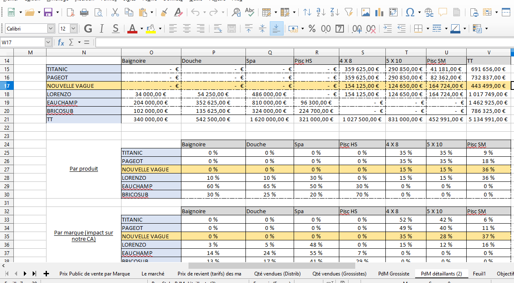
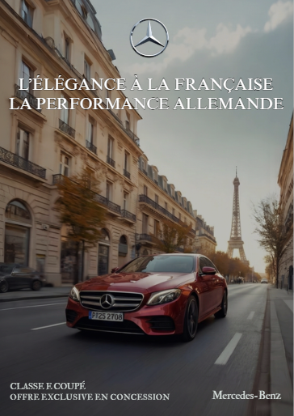
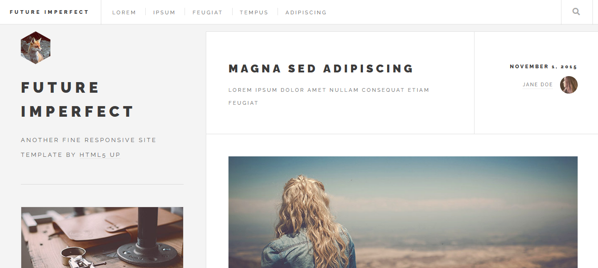

Mes projets
Découvrez mes réalisations académiques et professionnelles
Excel
Dans le cadre de mes cours en BUT Techniques de Commercialisation, j'utilise Excel pour organiser, analyser et comparer des données commerciales. Cette réalisation présente un tableau de suivi du chiffre d'affaires par produit et par marque, avec des totaux et des pourcentages permettant d'analyser le poids de chaque marque dans le CA.
Ce travail m'a permis de renforcer mes bases sur Excel, notamment l'utilisation des formules, des calculs de pourcentages et de la mise en forme pour rendre les données claires et exploitables. Excel est pour moi un outil essentiel d'analyse et d'aide à la décision.
Canva
Ce visuel a été réalisé sur Canva dans le cadre d'un projet de communication. L'objectif était de créer une affiche publicitaire mettant en valeur l'image de la marque Mercedes-Benz, en associant élégance, performance et prestige.
J'ai travaillé sur le choix de l'image, la hiérarchisation du message, ainsi que la cohérence graphique (typographies, couleurs, équilibre du visuel) afin de transmettre un message clair et impactant. Ce projet illustre ma capacité à utiliser Canva pour concevoir des supports de communication professionnels, adaptés à une marque haut de gamme.
Gimp

Projet réalisé sur GIMP consistant à supprimer des éléments d'une image afin d'obtenir un rendu plus épuré.
Ce travail m'a permis de renforcer mes bases en retouche photo et en utilisation des outils de correction.
Projet Web
Ce projet consiste en la transformation d'un template HTML/CSS existant afin de créer un site vitrine personnel. À partir de la version initiale du template, j'ai modifié la structure, les textes, les images et le menu pour l'adapter à mon identité, à mon parcours et à mes objectifs professionnels.
Ce travail m'a permis de développer mes bases en HTML et CSS, notamment dans la compréhension de la structure d'une page web, la modification du contenu, la gestion des liens et l'organisation des différentes pages du site. Il illustre ma capacité à personnaliser un site web et à le rendre cohérent avec un projet professionnel.
SAE

Parmi les différentes SAE réalisées durant ma formation, je participe actuellement à une SAE projet tutoré menée en collaboration avec la CPTS Montpellier Est Bérange. Ce projet consiste à accompagner une structure de santé dans la mise en place d'actions concrètes, notamment autour de la prévention, de l'organisation d'événements et du pilotage de projet.
Au sein de ce projet, je participe à la structuration du projet, à la planification des actions, à la préparation de réunions, ainsi qu'à la rédaction de documents de suivi (comptes rendus, cahier des charges). Cette SAE me permet de développer des compétences en gestion de projet, organisation, travail en équipe et relation avec des partenaires professionnels, dans un contexte réel et professionnalisant.
Stage

Dans le cadre de ma première année de BUT Techniques de Commercialisation, j'ai réalisé un stage de vente au sein de l'agence Côté Pierres Immobilier. Cette expérience m'a permis de découvrir concrètement le fonctionnement d'une agence immobilière et d'observer les différentes étapes du face-à-face de vente, de la découverte des besoins à l'argumentation.
Au cours de ce stage, j'ai participé à des actions de prospection, à la création et à la distribution de supports de communication (flyers), ainsi qu'à l'observation de la relation client.
Communication

En parallèle de mes études, j'exerce en tant que community manager indépendante pour un coiffeur. Je suis en charge de la gestion des réseaux sociaux, de la création de contenus visuels, de la rédaction des publications et de la mise en valeur des réalisations afin de renforcer la visibilité et l'image de marque de l'établissement.
Cette activité me permet de mettre en pratique les notions vues en cours, de développer des compétences en communication digitale, stratégie de contenu et relation client, tout en travaillant de manière autonome et professionnelle sur un projet réel.